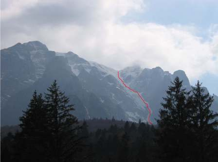

|

30.09.09: NOU: In curand se va lansa www.cupamalinului.ro. Este noul site al concursului si va cuprinde informatii despre concurs, poze, comentarii.
25.09.09: Stati pe aproape. In curand vom reveni cu vesti de la CUPA MALINULUI 2010 !!!
*****
26.06.09: Ne revedem la CUPA MALINULUI 2010. O vara senina!
12.06.09: Va multumesc tuturor celor care ati binevoit sa raspundeti la sondajul CUPA MALINULUI 2009. Comentariile voastre ma ajuta sa aflu daca si cum sa merg mai departe.
Iata rezultatele sondajului: 94% dintre repondenti doresc sa participe anul viitor, iar 6% au raspuns ca nu stiu. Concursul a lasat o impresie buna: 19% dintre repondenti au acordat nota 5/5, 50% - 4/5 si 31 % - 3/5.
Cei mai multi (87%) au apreciat locul unde se desfasoara concursul, 57% comunicarea informatiilor legate de concurs si 53% arbitrii. Au mai fost apreciate, in ordine, aportul salvamontului, organizatorul, premiile / sponsorii, drumul de retragere de pe vale si mesajul concursului. Cel mai putin apreciate au fost, in ordine, comentariile aparute pe alte bloguri, imaginea / mediatizarea concursului si perioada de desfasurare. In ceea ce priveste intrebarea legata de posibile imbunatatiri aduse concursului, 39% au selectat imaginea / mediatizarea concursului si perioada de desfasurare, in timp ce doar 6% ar dori sa se schimbe organizatorul, arbitrii sau locul de desfasurare.
A mai fost apreciata colegialitatea dintre participanti si faptul ca acest concurs strange comunitatea de frerideri. Printre lucrurile negative au fost mentionate obligativitatea castii de protectie, comentariile de pe alte bloguri si faptul ca nu a existat o intelegere cu primaria Busteni pentru urcarea pe gratis a concurentilor.
S-au facut mai multe sugestii, de care o sa tinem cont in organizarea editiei de anul viitor.
04.06.09: A iesit Filmul concursului! Contine poze cu toti concurentii si imagini filmate cu toate evolutiile. Pentru achizitionarea DVD-ul trimite-ti mail aici.
23.05.09: Feedback-ul Dvs. este foarte important pentru noi. Pentru a putea imbunatati concursul CUPA MALINULUI, va rugam sa completati formularul_de_feedback. Atentie: Acest formular se adreseaza celor care nu au concurat la CUPA MALINULUI 2009. Daca ati concurat si nu ati primit formularul pentru concurenti pe mail, click aici. Va multumim.
23.05.09: Dupa cum stiti filmul de la CUPA MALINULUI 2009 este in lucur. Am postat pe blog o mostra de 27 sec cu evolutia lui Dodo (locul I la snowboard). Toate celelalte evolutii vor putea fi vazute pe DVDul concursului.
22.05.09: Ocupanta locului 3 la schi, Emma Ersek, este rugata sa ne contacteze. Daca este cineva care stie adresa ei de mail il rog sa ne-o comunice.
21.05.09: Aici puteti gasi 75 dintre cele mai reprezentative poze facute de Mihai Irimescu la CUPA MALINULUI 2009.
Pe DVDul concursului care urmeaza sa apara la inceputul lunii iunie, vor fi puse toate pozele de la CUPA MALINULUI 2009.
Daca aveti imagini filmate sau poze de la acest eveniment si doriti sa fie incluse in DVDul concursului, va rog trimiteti mail aici.
19.05.09: Rezultatele de la CUPA MALINULUI 2009 pot fi gasite aici.
18.05.09: Podiumurile la cele 4 categorii le puteti gasi aici. In curand vor sosi si Rezultatele, pe care stiu ca le asteptati cu totii. Primii care vor primi Rezultatele vor fi concurentii, ca urmare ii rog pe toti cei care s-au inscris la fata locului si nu au dat contactul (adresa de mail, telefon, adresa) sa-l lase aici. Povestea din spatele culiselor o veti gasi aici. Cei care vor DVDul cu pozele si filmele facute la concurs sa se inscrie aici.
18.05.09: CUPA MALINULUI 2009 s-a incheiat. Multumim sponsorilor Horsefeathers, Sunset Villas si Movement, arbitrilor Ion Trandafir, Mihai Staicu, Alex, Sorin, Florin Mija, Bogdan, Ciprian si Andrei, tuturor celor care m-au ajutat intr-un fel sau altul: Cami (Face Communication Consulting), Cristina, Vladut, Ioana Trandafir, Doru, Alex Dobrescu, nu in ultimul rand lui Vio, care a ales sa concureze dar care m-a ajutat foarte mult fara sa stie. Remarc in mod special entuziasmul cu care toti acestia au venit alaturi de mine in acest vechi proiect, visat intr-o noapte in 1997, entuziasm care m-a molipsit si fara de care nu ar fi fost posibila continuarea traditiei. Multumiri si celor de la Teleferic Prahova SA care au muncit intr-un ritm deosebit pentru ca telecabina sa functioneze. Sa ne vedem cu bine la CUPA MALINULUI 2010.
16.05.09: Ziua cea mare a sosit. Bafta si curaj!
15.05.09: Astazi am facut ultima inspectie. Am inaugurat cabina care functioneaza cat se poate de normal. Zapada este mai multa decat in alti ani. Ca urmare sosirea va fi deasupra ultimelor saritori. Traseul este lung, asa ca este important sa va adaptati viteza si sa va dozati efortul. Programul ramane acelasi, in plus la ora 10.45 va avea loc sedinta concurentilor (rider's meeting) la startul concursului.
15.05.09: Alaturi de sponsorul principal Horsefeathers, au mai venit alti doi sponsori - Sunset Villas din Predeal si reputatul brand de schiuri Movement. Valoarea totala a premiilor depaseste astfel 10.000 RON. Sunset Villas ofera vouchere pentru toti concurentii ce vor fi la Festivitatea de Premiere, iar Movement ofera echipament sportiv, la fel ca si Horesefeathers.
15.05.09: URAAA! Cabina functioneaza normal!
14.05.09: Din motive de siguranta dorim sa limitam numarul participantilor la 100. Inscrierile se pot face si la startul concursului in limita locurilor ramase. Cei care se inscriu on line si completeaza Formularul de Inscriere pana pe 15 mai 2009 ora 20.00 beneficiaza de prioritate.
14.05.09: Cei care s-au inscris dar nu au platit Taxa de Participare, o pot face la startul concursului. Astazi a fost ultima zi cand s-a putut plati Taxa prin depunere de numerar.
14.05.09: Daca vreti sa participati si nu aveti casca trimiteti un mail aici. Avem 7 casti disponibile.
13.05.09: Ce se mai intampla la cabina din Busteni? Cei de acolo au profitat de vremea buna si au montat cablul cabinei de siguranta - cel care se rupsese in urma cu 4 luni. Asadar cablul este montat. O veste minunata sincer pentru ca actiunea depindea de vreme. Cablul are certificarea constructorului, a fost verificat ultrasonic, urmeaza doar certificarea ISCIR care consta in principiu intr-o formalitate birocratica. Astazi si maine are loc acest proces. "Sambata va merge sigur cabina, poate chiar mai devreme" a confirmat sursa de la cabina.
13.05.09: Va rog pe toti cei care ati primit Sondajul legat de cabina (cei care au achitat Taxa de Participare) si nu l-ati completat, sa il completati pentru a putea lua o decizie care sa tina cont de parerea voastra.
12.05.09: Riderii din blogosfera mi-au sugerat ca este o incompatibilitate intre mesajul concursului "Lupta impotriva Incalzirii Globale" si promovarea snowmobilului ca varianta de transport la startul concursului (in cazul in care cabina nu functioneaza). Nu consider ca transportul cu snowmobilul inrautateste in vreun fel problema pe care dorim sa o subliniem in mesaj, insa cred ca promovarea acestei solutii este divergenta cu mesajul. Ca urmare nu vom mai promova transportul cu snowmobilul la startul concursului. Nu ne ramane decat sa ne rugam ca totul sa se desfasoare conform planului la Busteni si cabina sa functioneze.
10.05.09: URAAA! Este o certitudine. Cabina va functiona incepand de miercuri, 13 mai 2009.
09.05.09: Toti concurenti care au terminat concursul si care sunt prezenti la Festivitatea de Premiere vor lua cate un premiu. Asadar nu ratati Festivitatea de Premiere, care va avea loc dupa concurs la Cabana Gura Diham.
09.05.09: Traseul de concurs este lung si dificil si poate surprinde chiar si pe schiorii / snowboarderii cu experienta. Sfatuim pe toti cei care nu au mai participat la concursul CUPA MALINULUI sau nu au mai coborat Valea, sa o schieze inainte de concurs.
Atentie: mergeti cu cineva care stie. Puteti sa pierdeti iesirea de pe Hornul Pamantos.
03.05.09: Astazi am facut prima tura de recunoastere in Valea Malinului, In pofida unui plafon dens de ceata pe platou, a fost o zi reusita. Zapada este multa pentru aceasta perioada a anului (vezi foto). Mai multe poze si povestea aici.

30.04.09: Cine doreste sa participe la CUPA MALINULUI 2009 poate sa se inscrie mult mai usor acum. Nu trebuie decat sa completati acest formular si in scurt timp veti primi un mail din partea noastra cu toate informatiile necesare participarii.
27.04.09: Vesti bune: Se prelungeste promotia pentru inscriere. Cei care achita taxa pana pe 8 mai 2009 beneficiaza de reducere 50%. In plus castigatorii editiei 2008 beneficiaza de gratuitate.
26.04.09: A nins in Bucegi! Pe https://radusavin.blogspot.com/ gasiti poze din acest weekend de pe Malin.
22.04.09: Ii invitam pe castigatorii editiei 2008 sa participe gratuit la concursul de anul acesta. De asemenea, castigatorii concursului de anul acesta vor beneficia de gratuitate la inscrierea la CUPA MALINULUI editia 2010.
20.04.09: Astazi de dimineata era zapada proaspata pe platou de la Babele in sus. Doi amici care au urcat cu snowmobilul pana la intrarea in Valea Malinului spuneau ca "este zapada multa". Cat de curand si pozele. Sa speram ca in noptile ce vor urma temperatura va scadea sub 0, astfel incat sa se formeze firnul.
19.04.09: Hristos a inviat!
18.04.09: Vor fi 3 criterii de arbitraj: Linia aleasa, Fluiditatea si Controlul. Mai multe detalii veti primi pe mail dupa plata taxei de inscriere.
18.04.09: Mihai Staicu a confirmat ca va arbitra la concurs. Asadar ma bucur sa va anunt inca un schior de valoare ca arbitru alaturi de Ion Trandafir.
18.04.09: Am fost intrebat despre modul cum sustinem lupta impotriva incalzirii globale. Atragerea atentiei asupra problemelor legate de incalzirea globala reprezinta unul dintre obiectivele noastre. Concursul CUPA MALINULUI mi se pare un eveniment cat se poate de potrivit pentru o astfel de declaratie. Daca nu devenim constienti si nu facem ceva cu totii, atunci, in cativa ani, nu vom mai avea nici un concurs pe Malin. Concursul in sine reprezinta o declaratie de susutinere a luptei impotriva incalzirii globale. Toate inscrisurile si comunicatele vor mentiona acest lucru.
18.04.09: Alte intrebari legate de cabina. Se pare ca saptamana aceasta va sosi cablul din Austria si ca de 1 mai cabina de la Busteni va functiona. Este mare presiune pentru aceasta data.
18.04.09: Am primit intrebari legate de zapada. Amicul care a fost duminica pe Valea Malinului, un cunoscator al schiului pe vaile de abrupt din Bucegi, spunea ca la intrarea pe Malin zapada este cat era anul trecut la concurs. In partea de jos zapada este multa, s-a schiat pana la intrarea in Hornul Pamantos si chiar si dupa.
17.04.09: Mai multa lume m-a intrebat despre taxa de concurs. Cine a trimis Cererea de Inscriere a primit un Formular in care erau toate aceste info. Taxa este de 50 Ron, iar redusa 25 Ron. Se poate plati cash sau prin cont bancar.
16.04.09: MAI ESTE O LUNA pana la startul concursului. Cativa amici s-au aventurat pe vale saptamana aceasta. Se pare ca nu avem pericol de avalansa anul acesta iar zapada deocamdata este pana la nivelul Hornului Pamantos. Adica pana in locul de unde incepem sa urcam. Mai este o problema legata de cabina, care deocamdata nu merge, insa am primit asigurari ca va functiona cu siguranta pana atunci.
10.04.09: Inca o stire de la Ion Trandafir: Cu prilejul acestui concurs, cei interesati vor primi detalii despre primul film romanesc de freeride. Filmul va aparea pe un DVD distribuit gratuit impreuna cu revista Knox la inceputul lunii iunie.
10.04.09: Ma bucur sa dau de veste ca Ion Trandafir (prorider Columbia/Dynastar) este arbitru la Cupa Malinului 2009. El vine in juriul acestui concurs cu gindul de a face un arbitraj bun, impartial si bine fundamentat, pe criteriul unde va fi repartizat. "Scopul nostru este de a face concurentii sa plece fara frustrari legate de interpretarea evolutiei lor." a declarat Ion.
09.04.09: Vestea cea mare este ca incercam sa aducem ca arbitru pe unul dintre cei mai valorosi schiori de freeride.
09.04.09: Regulamentul Competitiei va putea fi descarcat de catre participanti dupa inscriere.
08.04.09: Atentie: Reducere de 50% la taxa de participare pentru plata pana in data de 1 mai 2009.
09.03.09: Organizatorul Competitiei (TeamXpert) isi propune pentru editia din acest an, urmatoarele obiective:
- siguranta concurentilor,
- asigurarea si aplicarea unor criterii de arbitraj transparente si cat mai obiective.
01.03.09: Editia 2009 a Concursului de Freeride "Cupa Malinului" va avea loc in data de 16 mai.
|